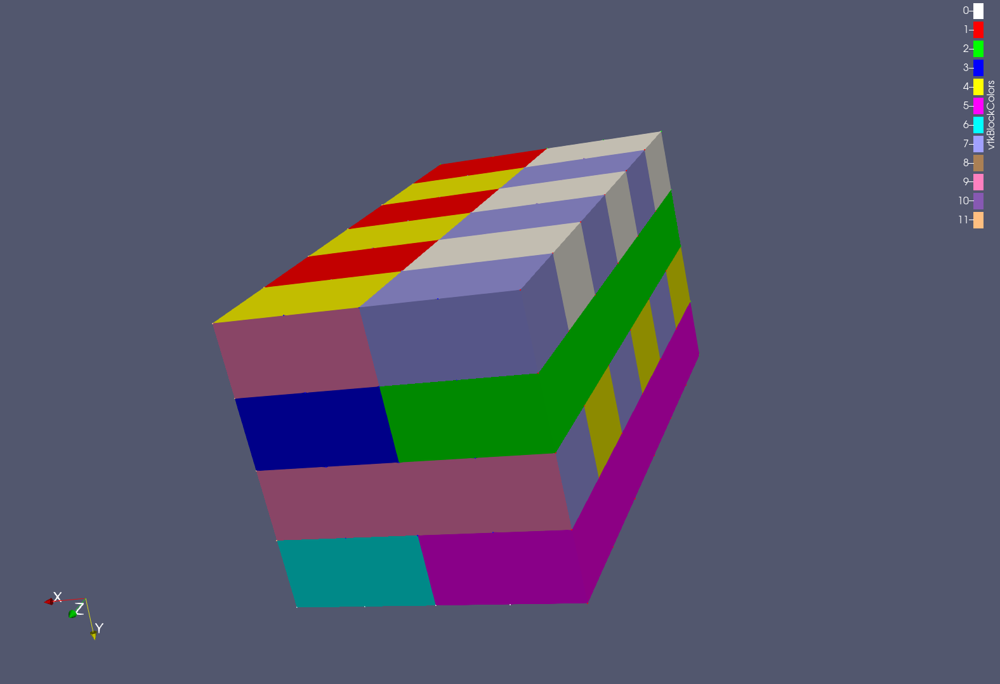
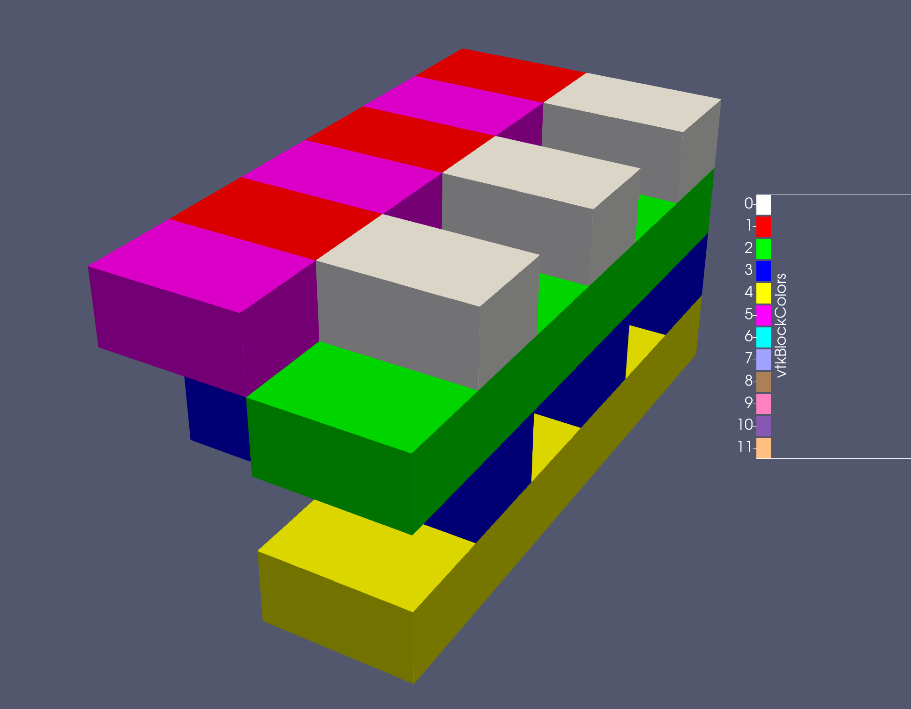

- inputThe mesh we want to modify
C++ Type:MeshGeneratorName
Controllable:No
Description:The mesh we want to modify
- target_blocksThe (list of) blocks (or 'subdomains') we wish to have moved to a new mesh (by name, not ID)
C++ Type:std::vector<SubdomainName>
Controllable:No
Description:The (list of) blocks (or 'subdomains') we wish to have moved to a new mesh (by name, not ID)
BlockToMeshConverterGenerator
Converts one or more blocks (subdomains) from a mesh into a stand-alone mesh with a single block in it.
Overview
The BlockToMeshConverterGenerator moves one (or more) blocks from a mesh to form a new mesh object. This does not erase/delete the blocks from the original mesh. The new mesh keeps the original mesh block ids and names.
commentnote
No sidesets are preserved in or added to the new mesh (neither are any element/node unique id's or ids in general, regardless of what options are set).
Visual Example
In the input below, six selected blocks are extracted from the input 3D mesh in the first figure. The final mesh is shown in the second figure.
[Mesh<<<{"href": "../../syntax/Mesh/index.html"}>>>]
inactive<<<{"description": "If specified blocks matching these identifiers will be skipped."}>>> = 'refine'
[file]
type = FileMeshGenerator<<<{"description": "Read a mesh from a file.", "href": "FileMeshGenerator.html"}>>>
file<<<{"description": "The filename to read."}>>> = 3dmultiblock.e
[]
[blockToMesh]
type = BlockToMeshConverterGenerator<<<{"description": "Converts one or more blocks (subdomains) from a mesh into a stand-alone mesh with a single block in it.", "href": "BlockToMeshConverterGenerator.html"}>>>
input<<<{"description": "The mesh we want to modify"}>>> = file
target_blocks<<<{"description": "The (list of) blocks (or 'subdomains') we wish to have moved to a new mesh (by name, not ID)"}>>> = "1 12 2 3 5 6"
[]
[refine]
type = RefineBlockGenerator<<<{"description": "Mesh generator which refines one or more blocks in an existing mesh", "href": "RefineBlockGenerator.html"}>>>
input<<<{"description": "Input mesh to refine"}>>> = file
block<<<{"description": "The list of blocks to be refined"}>>> = '12'
refinement<<<{"description": "Minimum amount of times to refine each block, corresponding to their index in 'block'. A single value can be specified to refine all blocks."}>>> = '1'
[]
# added to preserve the old gold file when all blocks were merged into block 0
[change_block_names]
type = RenameBlockGenerator<<<{"description": "Changes the block IDs and/or block names for a given set of blocks defined by either block ID or block name. The changes are independent of ordering. The merging of blocks is supported.", "href": "RenameBlockGenerator.html"}>>>
input<<<{"description": "The mesh we want to modify"}>>> = blockToMesh
old_block<<<{"description": "Elements with these block ID(s)/name(s) will be given the new block information specified in 'new_block'"}>>> = '1 12 2 3 5 6'
new_block<<<{"description": "The new block ID(s)/name(s) to be given by the elements defined in 'old_block'."}>>> = '0 0 0 0 0 0'
[]
[]
A 3d object with multiple, multi-colored blocks

A subset of blocks have been made into a new mesh
Input Parameters
- enableTrueSet the enabled status of the MooseObject.
Default:True
C++ Type:bool
Controllable:No
Description:Set the enabled status of the MooseObject.
- save_with_nameKeep the mesh from this mesh generator in memory with the name specified
C++ Type:std::string
Controllable:No
Description:Keep the mesh from this mesh generator in memory with the name specified
Advanced Parameters
- nemesisFalseWhether or not to output the mesh file in the nemesisformat (only if output = true)
Default:False
C++ Type:bool
Controllable:No
Description:Whether or not to output the mesh file in the nemesisformat (only if output = true)
- outputFalseWhether or not to output the mesh file after generating the mesh
Default:False
C++ Type:bool
Controllable:No
Description:Whether or not to output the mesh file after generating the mesh
- show_infoFalseWhether or not to show mesh info after generating the mesh (bounding box, element types, sidesets, nodesets, subdomains, etc)
Default:False
C++ Type:bool
Controllable:No
Description:Whether or not to show mesh info after generating the mesh (bounding box, element types, sidesets, nodesets, subdomains, etc)